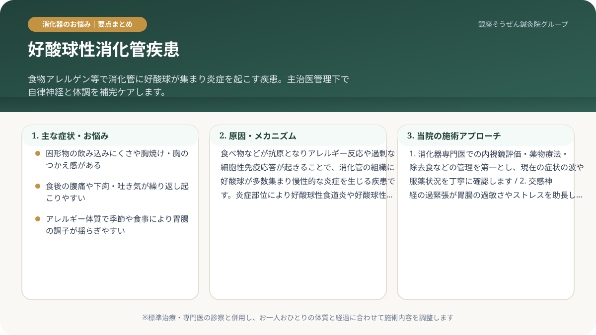

好酸球性消化管疾患の鍼灸
食物アレルゲン等で消化管に好酸球が集まり炎症を起こす疾患。主治医管理下で自律神経と体調を補完ケアします。
まず知っておきたい要点と改善の流れ

食べ物などが抗原となりアレルギー反応や過剰な細胞性免疫応答が起きることで、消化管の組織に好酸球が多数集まり慢性的な炎症を生じる疾患です。炎症部位により好酸球性食道炎や好酸球性胃腸炎などに分類されます。気管支喘息やアトピー性皮膚炎などアレルギー疾患を持つ方に発症しやすいとされ、腸内環境やストレスの影響も研究されています。
このようなお悩みはありませんか？
- ✓固形物の飲み込みにくさや胸焼け・胸のつかえ感がある
- ✓食後の腹痛や下痢・吐き気が繰り返し起こりやすい
- ✓アレルギー体質で季節や食事により胃腸の調子が揺らぎやすい
- ✓慢性的な炎症や食事制限による疲労感・ストレスが溜まっている
当院の施術アプローチ・改善の流れ
なぜ鍼灸で改善へ向かうのか？（作用機序の図解）
好酸球性消化管疾患に対する鍼灸は、脳腸相関と迷走神経反射による胃腸運動の調整機序を通じて、お体本来の回復力を引き出します。

胃腸機能と深く結びつく四肢・腹部の経穴を刺激し、体性感覚神経から中枢へ信号を送ります。
脳幹を経由した体性-内臓反射により、副交感神経（迷走神経）経由で胃腸の働きを調整します。
弱まったぜん動を促す一方、下痢型の過剰な収縮や内臓知覚過敏は穏やかに鎮静します。
ストレスで乱れにくい胃腸の土台を整え、胃もたれ・便通異常・吐き気の軽減を目指します。
院長YouTube解説・関連動画
公開日：２０２１年 １１月 ２日
更新日：２０２１年 １２月 ３日
本日は好酸球性消化管疾患について解説させていただきます。
☆本記事の内容
- •好酸球性消化管疾患とは
- •好酸球性消化管疾患の原因
- •好酸球性消化管疾患の症状
- •好酸球性消化管疾患の改善方法
- •好酸球性消化管疾患のまとめ
- •好酸球性消化管疾患は、食べ物などで胃腸の機能に障害が起きる疾患
- •好酸球性消化管疾患の原因は、アレルギー反応
- •好酸球性食道炎と好酸球性胃腸炎では症状が違う
- •好酸球性消化管疾患ではアレルゲンとなっている食べ物を摂らない
- •気がついたことは医師に伝える
- •好酸球性消化管疾患の改善例
銀座そうぜん鍼灸院の宗前です。
このページを書いている私は、鍼灸師として１３年、担当した利用者様数８０，０００人を誇り、病気の休職者３００人を社会復帰できるまで回復させてきた実績があります。
好酸球性食道炎と好酸球性胃腸炎では症状が違う
好酸球性消化管疾患は、主に好酸球性食道炎と好酸球性胃腸炎に分かれています。好酸球性食道炎と好酸球性胃腸炎では症状が違います。
好酸球性食道炎の場合、食道に病気が起こることで食べ物を飲んだり食べたりしにくくなります。そのため、小児の場合上手に哺乳が上手にできなくなったり、嘔吐や腹痛が起こったりします。
大人の場合、主な症状は食べ物の飲み込みにくさです。
好酸球性胃腸炎の場合、胃や腸に病気が起こることで食べ物の消化や栄養物の吸収が悪くなります。そのため症状としては、腹痛、嘔吐、下痢、栄養障害がなどが現れます。
好酸球性消化管の病気（EGID）は一連の病気であり、その症状は感染部位（食道、胃、小腸、大腸など）と病気の形態（例えば、好酸球性食道炎（EoE）や好酸球性胃腸炎（EGE））によって変わる可能性があります。好酸球性食道炎（EoE）の症状を以下に説明します。
飲食物の嚥下困難：これはEoEの最も一般的な症状で、飲食物が食道を下るのが難しく感じる状態です。これは特に固形食品を飲み込む際に顕著で、最悪の場合、飲食物が食道に詰まる（食物インパクション）という状況に至ります。
胸痛：食道の炎症と組織の破壊により、飲食物の嚥下時に胸痛を感じることがあります。これはしばしば心臓の問題と間違えられることがあります。
胃酸逆流の症状：逆流、胸焼け、喉の痛みなど、胃酸逆流の症状を持つ患者も多くいます。しかし、これらの症状は通常の酸逆流治療に反応しないことが多いです。
好酸球性胃腸炎（EGE）および好酸球性大腸炎（EC）の症状：
腹痛：腹部の不快感や痛みはEGEとECの一般的な症状で、特に食事後に発生します。
下痢：これは特にECで一般的な症状で、稀に血便を伴うこともあります。
吐き気と嘔吐：これらの症状は特にEGEで一般的です。
体重減少と栄養不良：繰り返しの嘔吐や下痢、食物の吸収不良により、体重減少や栄養不良を引き起こすことがあります。
食物の嗜好性変化：特定の食物に対する反応を避けるため、特に子供たちは自然にその食物を避ける傾向があります。
その他の症状：
疲労：体の炎症反応や栄養不良により、慢性的な疲労を感じることがあります。
アトピー性疾患：EGIDを発症している人の中には、喘息、アトピー性皮膚炎（湿疹）、鼻炎などの他のアトピー性の病気を持つ人もいます。
これらの症状の多くは他の病気と重複するため、判断は困難であることが多いです。
好酸球性消化管疾患の改善方法は、原因となるアレルゲンがわかる場合はアレルゲンとなっている食べ物を摂らないことです。
好酸球性食道炎の場合、プロトンポンプ阻害薬を使うことで胃酸を減らすことが効果的なことも多いです。
他にも、改善するための薬としてステロイドホルモンを使うこともあります。ステロイドホルモンであまり効果が見られない場合は免疫抑制薬を使うこともあります。
好酸球性消化管疾患（EGID）の改善法は、その病態、年齢、症状の重症度などに基づいて個々にカスタマイズされます。一般的に、改善方法の目的は、症状の改善、好酸球の過剰な蓄積を抑制し、可能な限り正常な生活を維持することです。以下に、主要な改善戦略について説明します。
ステロイド：EGIDの主要な改善法はステロイドです。これは通常、吸入用または飲み込み用のステロイドとして処方されます。これらの薬は、食道の炎症を抑え、好酸球の増加を制御します。長期間の使用には副作用のリスクがありますが、そのリスクは全身的なステロイドに比べて低いとされています。
プロトンポンプ阻害剤（PPI）：これらの薬は、胃酸の産生を抑えることで食道の炎症を和らげるのに役立ちます。一部では、PPI単独で症状が改善することがあります。
リューキトリエン阻害剤：これらの薬は、好酸球の活動を阻害することで、食道の炎症と症状を軽減するのに役立つことがあります。
免疫抑制剤：重症の場合や、他の改善法に反応しない場合には、免疫抑制剤が使用されることがあります。
除去食事：特定の食物がEGIDの症状を引き起こす可能性があるため、アレルゲンを特定し、それらの食物を食事から除去することが推奨されることがあります。これには、乳製品、小麦、卵、大豆、ピーナッツ・ツリーナッツ、魚・シーフードの「６大アレルゲン」を除去する方法や、特定の食物アレルギーテストに基づいて特定の食物を除去する方法があります。
全素食（アミノ酸）ベースの食事：最も厳格な除去食事は、全素食ベースの食事療法です。これは、アレルゲンを含まない特別なアミノ酸ベースの栄養飲料だけを摂取する方法です。
内視鏡的介入：
バルーン拡張：EoEによる食道の狭窄（食道狭窄）に対する一般的な改善方法は、内視鏡的バルーン拡張です。これは、バルーンを用いて食道の狭窄部を物理的に拡張する方法です。
これらの改善法はしばしば組み合わせて使用され、症状や反応に応じて調整されます。EGIDの改善は一般的には長期的で、定期的なチェックと調整が必要です。
好酸球性消化管疾患は、食べ物の中のアレルゲンが原因で起こることが多いです。しかし、原因となるものを食べた後すぐに症状が現れるわけではありません。そのため、原因であるものがわからないことも非常に多いです。
食べ物以外にも花粉や空気の中のカビの胞子などによって症状が現れることもあります。
牛乳や卵などの決まったものを食べた時調子が悪くなりやすい、決まった季節になると調子が悪くなるなど、自分で気がついたことがある場合は医師に伝えることで改善にも役に立ちます。気がついたことは医師に伝えるようにしましょう。
好酸球性消化管疾患の改善例
ヒロシさんは30代の男性で、1年前から不定期に腹痛と下痢を繰り返していました。始めは食事の内容やストレスによるものと考えていましたが、症状は時間とともに悪化しました。最近では、食事後の腹痛が頻繁に起こり、体重も少しずつ減少していました。そのため、一般内科に行き、さらに消化器科への紹介を受けました。
消化器科では、ヒロシさんの症状と生活習慣、食事内容を詳しく聞いた上で、上部および下部の内視鏡で調べました。内視鏡とその組織生検の結果、ヒロシさんは好酸球性胃腸炎（EGE）と判断されました。
ステップ1：食事と薬
ヒロシさんの改善方法は、まず食事と薬から始まりました。食事では、一般的なアレルギーを引き起こす可能性がある食物（乳製品、小麦、卵、大豆、ナッツ、魚・シーフード）を一時的に排除するよう指導されました。これは、食物がヒロシさんの症状を引き起こしている可能性があるためです。
また、彼は薬として、ステロイドの内服を開始しました。この薬は、ヒロシさんの食道、胃、腸の炎症を抑え、好酸球の増加を制御することを目的としています。
ステップ2：食物アレルギーテストと食事の調整
除去食事を始めて数週間後、ヒロシさんの腹痛と下痢は少しずつ改善しました。この段階で、アレルギー専門医による食物アレルギーテストが行われ、ヒロシさんが小麦と乳製品に反応することが明らかになりました。
この結果をもとに、ヒロシさんの食事はさらに調整されました。小麦と乳製品を完全に避けつつ、他のアレルゲン食品は再度導入されました。
ステップ3：薬の調整とフォローアップ
薬と食事の両方を始めて数か月後、ヒロシさんの症状は大幅に改善しました。腹痛と下痢はほとんどなくなり、体重も元に戻りました。
この段階で、ヒロシさんの医師はステロイドの用量を徐々に減らすことを提案しました。これは、長期的なステロイドの使用が副作用を引き起こす可能性があるためです。ステロイドの減量は、症状が再発しないかどうかを確認しながら慎重に行われました。
ヒロシさんは定期的にクリニックに行き、体調や食事、薬の効果について医師と話し合いました。これにより、彼の改善計画は適宜調整され、最善の結果を得るために微調整され続けました。
注意すべきな点は、個人の症状や体質、生活環境が異なるため、改善方法も個々にカスタマイズされるということです。また、EGIDの改善は通常、長期にわたるもので、病状の進行や改善の効果を評価するために、定期的なチェックが必要です。
ステップ4：長期的な管理と調整
ヒロシさんの症状は一時的に改善しましたが、それは改善の終わりを意味するものではありません。EGIDは、症状が再発する可能性がある病気です。ヒロシさんは、食事を続け、必要に応じて薬を調整することで、症状を管理しました。また、ヒロシさんは定期的に内視鏡の調べを受け、病状の進行を確認しました。これらのフォローアップは、改善の効果を評価し、必要に応じて改善方法を調整するための重要なステップです。
ステップ5：生活習慣の改善
ヒロシさんは、飲酒や喫煙、ストレス管理など、生活習慣の改善にも取り組みました。これらは直接的にEGIDの原因となるものではありませんが、一般的な健康状態を改善し、体の反応を良好に保つことが、病状管理に役立つことが知られています。
ヒロシさんの改善の経過を通じて、EGIDの改善方法が本人と医師の長期的なパートナーシップを必要とすることがわかります。適切な改善とケアにより、日常生活をほぼ通常通りに過ごすことができます。改善方法は症状や体調に応じて調整され、個々にとって最善の生活の質を維持することを目指しています。
胃腸・逆流性食道炎・機能性ディスペプシアのツボ図解
実際の施術ではお一人おひとりの体質・症状に合わせて選穴しますが、胃食道逆流症（GERD）・機能性ディスペプシア・胃痛・吐き気ケアの臨床でよく用いられる代表的なツボの目安です。

📌 代表的なツボの詳細一覧表を開く（6穴） ▼
| ツボ名 | 位置の目安 | 主な狙い | セルフケアの注意点 |
|---|---|---|---|
| 巨闕（こけつ） | みぞおちの骨のすぐ下 | 胸やけ・みぞおちのつかえ感・横隔膜の緊張緩和 | 食後すぐの強い圧迫は逆流を招くため避けます。 |
| 中脘（ちゅうかん） | みぞおちとおへその真ん中 | 胃もたれ・早期膨満感・胃排出能サポート | 温めながらゆっくり腹式呼吸を行うと緩みます。 |
| 天枢（てんすう） | おへその左右それぞれ指3本分外側 | 消化管全体の蠕動バランス・お腹の張り軽減 | お腹が冷えやすい方は温灸がおすすめです。 |
| 内関（ないかん） | 手首の横ジワから指3本分肘寄りの中央 | 吐き気・胃酸逆流に伴う不快感・下部食道括約筋の調整 | 胃カメラ等の検査前後のセルフケアにも有用です。 |
| 足三里（あしさんり） | 膝の下外側、指4本分下 | 迷走神経を介した胃腸運動調整の最重要穴 | 毎日続けやすい胃腸の養生穴です。 |
| 公孫（こうそん） | 土踏まずの縁、親指の付け根からかかと寄り | 胃痛・胃もたれ・自律神経性の胃腸不調ケア | 内関と組み合わせて優しく押します。 |
国際査読論文の科学的エビデンス
国際的な医学データベース（PubMed・Cochrane等）で報告されている胃食道逆流症（GERD）・機能性ディスペプシア・胃痛・吐き気ケア領域の代表的な査読済み鍼灸研究をまとめています（標準治療との併用や研究上の限界を含めて正確に掲載）。
📚 査読論文データ・PubMed出典リンクを開く（4件） ▼
| 年・研究デザイン | 対象・規模 | 主な結果 | 限界・出典 |
|---|---|---|---|
| 2016年 大規模多施設RCT | 慢性重症機能性便秘 1,075名（15病院） | 週平均完全自発排便回数が電鍼+1.76 vs シャム+0.87（P<0.001）、20週追跡時も持続（P<0.001）。 | 20週以降の長期経過は未評価。 Ann Intern Med (PMID: 27618593) |
| 2020年 多施設RCT | 機能性ディスペプシア（PDS）278名（5施設） | 4週時点の総合改善反応率83.0% vs シャム51.6%（P<0.001）、終了後12週間維持。 | 16週脱落率18%・施術者盲検化不可。 Ann Intern Med (PMID: 32422066) |
| 2025年 多施設RCT | 下痢型過敏性腸症候群（IBS-D）280名（6病院） | 6週時点の複合反応率57.9% vs シャム41.4%（RR 1.40, P=0.008）、重篤な有害事象なし。 | IBS-D限定・中国多施設試験。 Gastroenterology (PMID: 40441496) |
| 2017年 メタ解析 | 胃食道逆流症（GERD）12 RCTs（n=1,235） | 鍼＋西洋薬併用は西洋薬単独より総合改善優位（RR 1.17, p=0.03）、再発率低下（RR 0.42, p<0.001）。 | 組入れ試験の質が低く標準治療との併用が前提。 Acupunct Med (PMID: 28689187) |
参考文献・出典
- 2016年 大規模多施設RCT（慢性重症機能性便秘 1,075名（15病院））— Ann Intern Med (PMID: 27618593)
- 2020年 多施設RCT（機能性ディスペプシア（PDS）278名（5施設））— Ann Intern Med (PMID: 32422066)
- 2025年 多施設RCT（下痢型過敏性腸症候群（IBS-D）280名（6病院））— Gastroenterology (PMID: 40441496)
- 2017年 メタ解析（胃食道逆流症（GERD）12 RCTs（n=1,235））— Acupunct Med (PMID: 28689187)
よくある質問（FAQ）
Q. 薬や除去食と並行して鍼灸を受けられますか？▼
Q. どのくらいの頻度で通うのが目安ですか？▼
あわせて読まれる関連疾患（消化器のお悩み）
椎体・肛門・気管食道・橈骨・腎の複数徴候を合併する先天性疾患。専門医管理下で筋緊張や疲労を補完します。
キノホルムによる薬害で生じた神経障害（新規発症なし）。専門医管理下で慢性期のしびれや筋緊張を補完ケアします。
飲酒が主因でない脂肪肝に炎症・線維化が加わった状態。食事と運動での減量を軸に、倦怠感や生活リズムの乱れを鍼灸で支えます。
長期の過剰飲酒で脂肪肝から肝炎・肝硬変へ進む肝障害。専門医管理と禁酒を基本に疲労や自律神経を整えます。
胃の一部が横隔膜の食道裂孔から上方へ飛び出す状態。医療機関での管理と並行し背部緊張や自律神経を整えます。
ガストリノーマによる胃酸過剰で難治性潰瘍を起こす疾患。専門医の治療を第一に、体調・自律神経を補完します。
CLINICAL RECOVERY CASES
✨ 実際の臨床改善事例・回復経過を見る
銀座本院をはじめ各院での実際の改善事例を症状別に絞り込んでご確認いただけます。
おひとりで悩まず、まずはご相談ください
銀座本院・川口・大宮・横浜・博多・田無の各院でご予約を承っております。